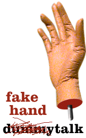

|
 |
|
Joan, "Mannequin Advisor of the
Stars" is stateside this week attending an electric train collectors symposium.
Answering your questions in her place is Joan's spare hand. Joan will be back next week, |
"BE PATIENT, I'M JUST A HAND..."
|
Dear Joan's hand, I've been asked by my cousins to participate in an elaborate prank with them. It would involve my visiting the house of some collegues of theirs, asking to use their phone because my car broke down, then afterwards, reporting to my cousins how many people are in the house and where they are. Then we would all return to the house wearing masks and carrying guns, lock everyone in the bathroom and take all of their "mechandise", as my cousins call it. It promises to be very funny but I have some reservations. What if everyone can't fit in the bathroom for example? Wondering, Swany Dear Swany, I found myself in a situation not unlike yours recently. I was hanging there at the end of Joan's arm as she stood in the reception area. Joan's hand Hey fake hand, I teach a first-aid class to elementary school kids around my community. Last week, one of the second-graders had some very candid (and naive) questions about the lack of "certain anatomy" on the CPR dummy I was demonstrating on. I told the kid that during cardiac arrest, the genitalia covers itself with a protective plastic shell. Problem diffused, but then he pressed for more details. Flustered, I said "chemical reaction". I know kids are pretty smart, do you think he was fooled? sincerely, Dale Dear Dale, Yikes, don't know how much help I can be with this one, but here are two general rules I like to follow. 1) Don't let anyone -even if they're just joking around- bend your fingers backward. It will put a kink in the skeletal wire and the fingers will lose that natural look. 2) Keep hot display lights away from your polystyrene skin. Hope that helps, Joan's hand Hey Joan's hand! What's the best way to keep my ex-boyfriend from telling all my friends that I'm a licenced tennis instructor? sick of the crap, Juanita Dear Juanita Wow, good question. Have someone spray you with a transparent weather sealant. I don't know that it will help you with your ex-boyfriend, but it will preserve your shine and prevent cracking! Joan's hand Hi fake hand, Is it true that the late "TattleTales!" host Bert Convy actually rented his own hair from the mafia? Suspicious, Halldor Dear Halldor Yes it is true. From about the time he appeared in "Cannonball Run II" to his untimely death, Bert was indeed paying a major New York crime family a $14.00 per month "subscription" to his own biologically grown hair. Joan's hand |
| archives | main | chat |
* |
dummytalk | outings | little things |